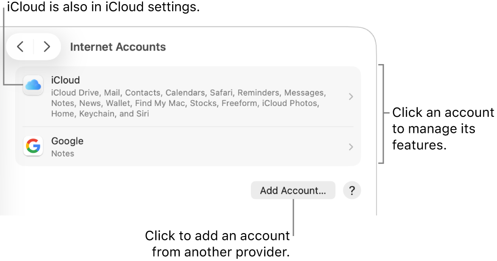

Adding your Crosby email to Apple Mail on a Mac
Step-by-step walkthrough for connecting your @crosbydevelopment.com Workspace email to the Mail app on a MacBook or iMac.
Before you start
- The Mail app icon is a light blue square with a white envelope. It's in your Dock or the Applications folder.
- If you've never had Crosby email on this Mac, skip Phase 1 and go straight to Phase 2.
- If the old @crosbydevelopment.com account is already in Mail (connecting through Rackspace), do Phase 1 first to remove it.
Phase 1 — Remove the old account (skip if you've never set up Crosby email here)
Open System Settings
Click the Apple menu () in the top-left corner of the screen, then choose System Settings… (or System Preferences… on older Macs).
Go to Internet Accounts
In the sidebar, scroll down and click Internet Accounts. You'll see a panel listing any accounts already set up on this Mac.

Click the old account
Find the one labeled yourname@crosbydevelopment.com with "Mail" underneath. Click it once to select.
Delete it
Click Delete Account… (or the — button at the bottom on older Macs). Confirm when prompted.
Phase 2 — Add your Workspace account
Click Add Account
Still in Internet Accounts, click Add Account… at the bottom of the list.
Choose Google
From the provider list, click Google.
Allow the browser to open
You'll see a popup that says "Safari (or your default browser) wants to use accounts.google.com to sign in." Click Continue.
Enter your Crosby email
Your browser opens to Google's sign-in page. Type your full address — yourname@crosbydevelopment.com — and click the blue Next button.

Enter your password
Type your Workspace password and click Next. Complete 2FA if prompted.

Allow macOS to access your Google Account
Google shows the list of permissions macOS needs (Mail, Contacts, Calendar). Scroll to the bottom and click Continue.
Choose what to sync
macOS asks which Google services to use. Toggle on the ones you want — at minimum Mail. Calendars and Contacts are also useful. Click Done.
Open Mail
Switch back to the Mail app (Dock or ⌘-Tab). Your Crosby account now appears in the sidebar and your inbox starts loading.
Send a test email
Click New Message, send yourself or a coworker a quick test, and confirm it arrives.
Troubleshooting
| Symptom | Fix |
|---|---|
| "Couldn't find your Google Account" | Check spelling. If still failing, your Workspace account may not be ready yet — call us. |
| Password rejected | Click Forgot password?, or call us to reset. |
| Mail not appearing in the sidebar | System Settings → Internet Accounts → click the Google account → make sure the Mail toggle is on. |
| Old emails missing | Google backfills history in the background. Give it through the weekend. |
| Folders look strange (e.g., [Gmail]/All Mail) | That's Gmail's folder system mapping into Mail. Leave it as-is or hide folders you don't use. |